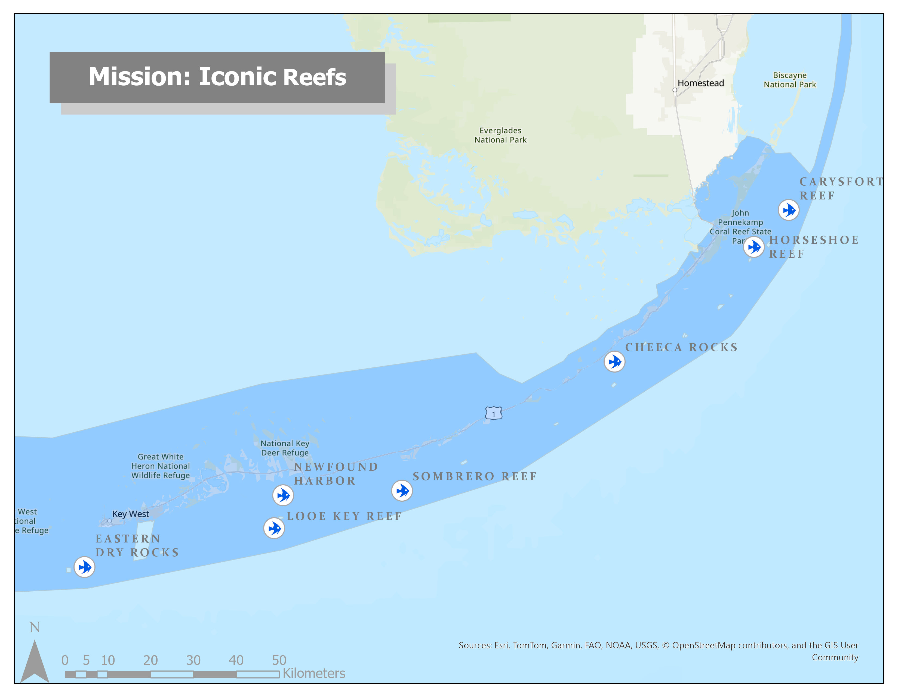
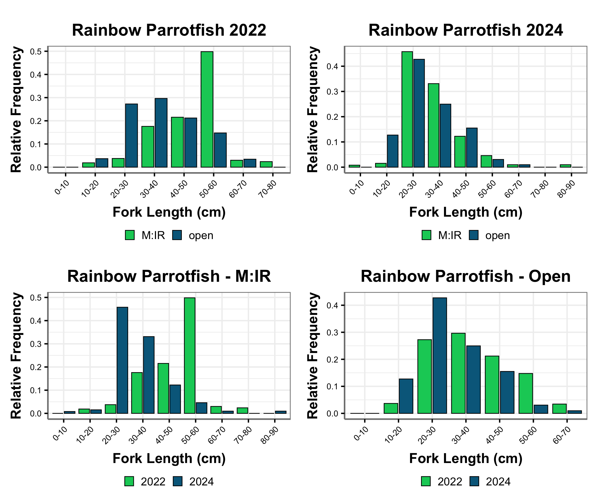
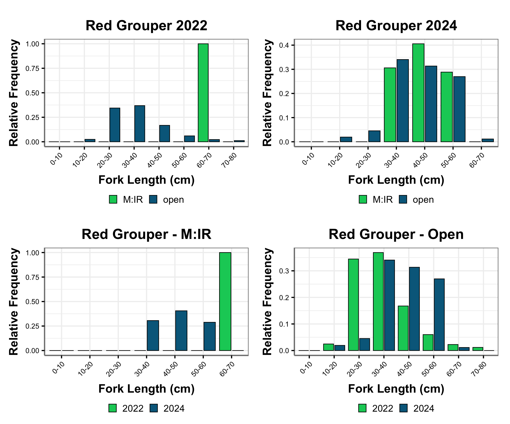

1 Introduction
1.1 Map of M:IR Sites
2 The Data
NCRMP fish surveys use the Reef Visual Census (RVC), stationary-point-count method modified from Bohnsack and Bannerot (Bohnsack and Bannerot 1986). Non-extractive visual surveys are conducted on shallow (<30 m), hard-bottom coral reef habitats. A stratified-random, one-stage survey design was used to select and sample within 50 m x 50 m grid cells (Smith et al. 2011). This dataset includes reef fish data collected from sample locations in the Florida Keys. For parity, the larger NCRMP dataset is restricted to strata types (i.e., depth and rugosity combinations) that occur within the M:IR areas (table 1).
2.1 Strata
2.2 Fish Species
Six reef fish species were chosen to represent different trophic levels and functional roles.
3 Density
NCRMP’s comprehensive sampling design provides a broad, population-level perspective on the status and trends of the reef fish community. In particular, trend data can provide insight into how species respond to events including regional management actions such as targeted coral restoration efforts within the M:IR sites. Density results are shown as the number of individuals per survey area 177 m\(^{2}\) ± SE.

4 Occurrence
Occurrence measures how often a species is detected in surveys, providing insight into its distribution within M:IR sites and outside of M:IR sites in the Florida Keys. Results show presence regardless of abundance, helping to identify widespread versus rare species. Survey occurrence results are shown within M:IR sites (inside) and in the Florida Keys (outside) ± SE.

5 Length Frequency
Length compositions provide a detailed description of a selected fish’s population structure. These highly informative figures can show the length at which a fish species recruits to the coral reef (i.e., young of year or from nursery habitat), length classes removed by the local fisheries, and the effectiveness of management actions






References
Bohnsack, James A., and Scott P. Bannerot. 1986. “A Stationary Visual Census Technique for Quantitatively Assessing Community Structure of Coral Reef Fishes.” NOAA Technical Report NMFS (41).
Smith, S. G., J. S. Ault, J. A. Bohnsack, D. E. Harper, J. Luo, and D. B. McClellan. 2011. “Multispecies Survey Design for Assessing Reef-Fish Stocks, Spatially Explicit Management Performance, and Ecosystem Condition.” Fisheries Research 109 (1): 25–41. https://doi.org/10.1016/j.fishres.2011.01.012.